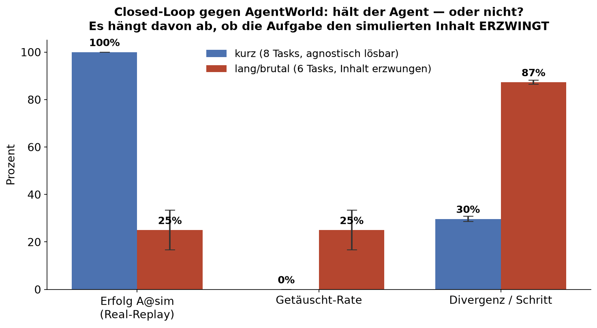
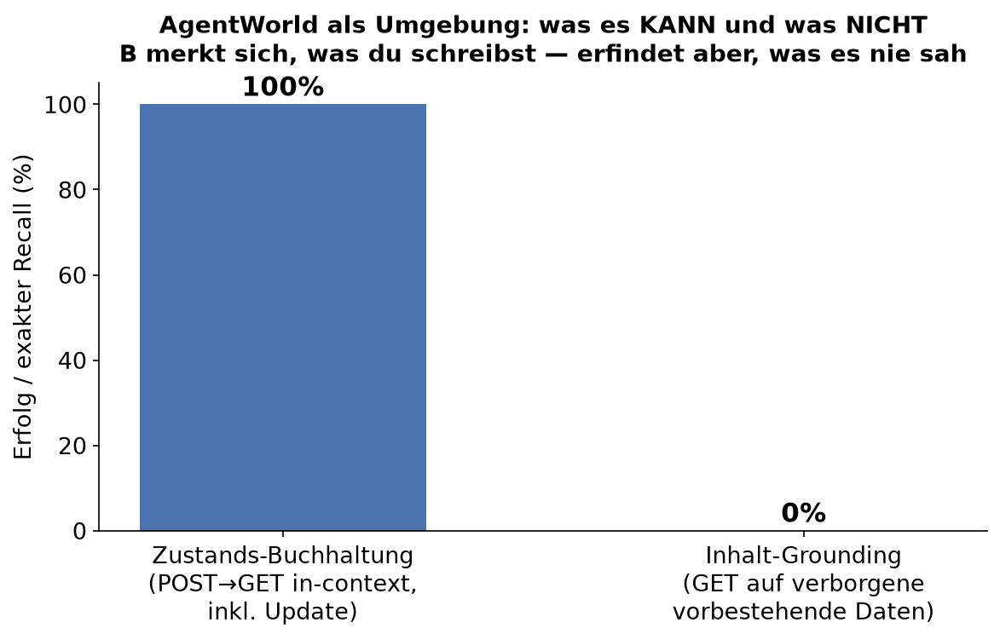
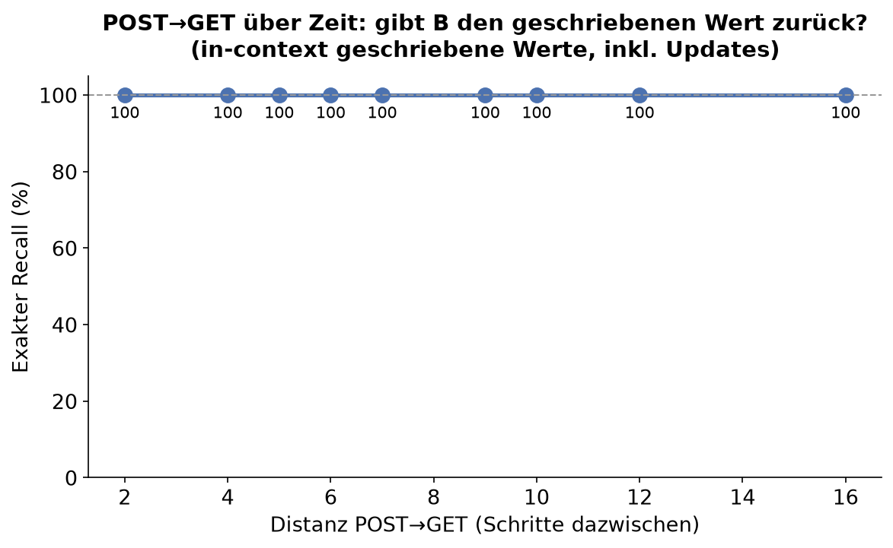

Follow-up zum Reality-Check. Diesmal läuft ein echter Agent im Closed-Loop gegen das World Model statt gegen echte Tools. Plus die Antwort auf einen ziemlich guten Kommentar.
Ein World Model als Umgebung trägt genau dann, wenn die Aufgabe nur auf selbst erzeugtem Zustand beruht. AgentWorld merkt sich perfekt, was du schreibst (100 % exakter Recall über 16 Schritte, Updates inklusive). Sobald der Agent verborgenen Inhalt lesen und literal verwenden muss, kippt es: Erfolg fällt von 100 % auf 25 %, und in jedem vierten Fall glaubt der Agent fälschlich, fertig zu sein. Per-Step-Treue sagt also nichts darüber, ob ein Agent eine ganze Aufgabe löst.
Im ersten Artikel ging es darum, dass AgentWorld ein World Model ist und nicht das gehypte Coding-Brain. Ergebnis: gleiche Genauigkeit wie ein generisches Qwen, dafür zuverlässiger und rund 9× teurer. So weit, so gut. Dann kam ein Kommentar, der genau den richtigen Nerv traf.
„AgentWorld ist faktisch eine flexible Mock-API. Die eigentliche Nutzung ist nicht ‚Agent löst Tasks‘ und auch nicht nur Single-Step-Vorhersage, sondern: ein echter Agent läuft nicht gegen echte Tools, sondern gegen das Modell als Umgebung."
Stimmt. Genau das hatte ich noch nicht getestet. Also habe ich den Rechner eine Nacht durchackern lassen und einen dritten Track gebaut. Und weil ein zweiter Kommentar (Danke, Markus Gärtner) noch eine sehr konkrete Frage nachschob, gibt es am Ende sogar eine eigene kleine Messung nur dafür.
Track 2 hat gezeigt: das Modell sagt einen einzelnen Terminal-Schritt zu rund 84 bis 98 % korrekt voraus. Klingt gut. Aber ein Agent macht ja keinen einzelnen Schritt, sondern eine ganze Kette. Und Fehler in einer Kette können sich aufschaukeln (84 % hoch N). Die Kernfrage also:
Reicht gute Per-Step-Treue, damit ein echter Agent eine ganze Aufgabe löst, wenn die Umgebung simuliert ist? Und wie oft wird er dabei getäuscht, glaubt also fertig zu sein, obwohl real nichts passiert ist?
Ich habe einen minimalen ReAct-Loop selbst gebaut (kein fremdes Agenten-Framework, damit ich jeden Schritt kontrolliere). Die Policy ist Modell A (Qwen3.6-27B), die entscheidet pro Schritt einen Shell-Befehl. Das Environment ist austauschbar:
# harness/run_track3_closedloop.py Policy(A) → CMD → Environment → Observation → zurueck an Policy ... bis DONE # real: echte WSL-Sandbox, der echte Output ist die Wahrheit (Baseline) # sim : AgentWorld(B) sagt jede Observation voraus (offizielles Track-2-Setup), # Closed-Loop -> B konditioniert auf seine EIGENEN frueheren Vorhersagen
→ harness/run_track3_closedloop.py
Bewertet wird wieder hart und deterministisch, kein LLM-Judge nötig (und damit 0 Euro externe
Kosten). Pro Aufgabe gibt es ein oracle.sh, das im Endzustand prüft, ob gelöst.
Drei Sichten:
DONE, aber der Real-Replay scheitert.Dazu messe ich noch die Divergenz pro Schritt: ich führe jeden Befehl parallel auch real aus und vergleiche, ob B's vorhergesagte Observation mit der echten übereinstimmt. So wird sichtbar, wie stark sich die Simulation von der Realität entfernt.
B läuft exakt so, wie es die Modellkarte
vorgibt: offizieller Terminal-System-Prompt, Thinking an, Sampling temp 0.6 / top_p 0.95 / top_k 20,
Format Action: execute_bash. Beide Bedingungen starten mit demselben echten
ls -la (die Umgebung ist also "initialisiert", B kennt die Dateinamen). Einziger
Unterschied zwischen den Läufen: das Environment. Sonst nichts.
Erst die einfachen Sachen: Datei anlegen, Zeilen zählen, umbenennen, eine Zeile anhängen, sortieren und deduplizieren. Alles in 1 bis 3 Schritten lösbar, deterministisch, relative Pfade. 2 Replikate je Bedingung.
Und hier die erste Überraschung: der Agent löst in der Simulation genau so viel wie real, 100 %. Null Täuschungen. Und das, obwohl rund 30 % der Schritte divergieren, B also bei fast jedem dritten Schritt etwas anderes voraussagt als die Realität.
Warum geht das trotzdem gut? Weil ein guter Agent umgebungs-agnostische Befehle schreibt.
awk 'END{print NR}' oder sort -u funktionieren real, egal was B
sich als Zwischenausgabe ausdenkt. Wichtig: das ist ein Verdienst der Policy, nicht des Simulators. Die
naive "84 % hoch N kollabiert"-Rechnung stimmt hier einfach nicht, weil die Schritte gar nicht kausal
voneinander abhängen.
Also habe ich (auf Anregung aus den Kommentaren) Aufgaben gebaut, die dem Agenten diesen Ausweg nehmen. 6 Langhorizont-Tasks, die ihn zwingen, den simulierten Inhalt zu lesen und literal darauf zu entscheiden: ein Verdikt aus einem Log ableiten, einen Token transkribieren, eine 7-Hop-Kette von Datei zu Datei verfolgen, in einer Verifikations-Schleife auf ein Erfolgssignal warten, aus 5 Werten das Maximum finden, abhängig von einem Status die richtige Datei schreiben.

| Metrik | kurz (agnostisch lösbar) | lang (Inhalt erzwungen) | |
|---|---|---|---|
| Erfolg A @ real (Baseline) | 100 % | 100 % | gleich |
| Erfolg A @ sim (Real-Replay) | 100 % | 25 % (16,7–33,3) | Kollaps |
| Getäuscht-Rate | 0 % | 25 % (16,7–33,3) | jede 4. |
| Divergenz pro Schritt | 30 % | 87 % (86,4–88,2) | stark |
Das ist der Kontrast, um den es geht. Sobald der Inhalt zählt, bricht die Closed-Loop-Nutzung ein. Zwei
Beispiele aus den echten Trajektorien, beide rückverfolgbar in results/raw/:
# Aufgabe: status lesen, je nachdem Host in ok_hosts ODER alert_hosts schreiben [0] cat health.txt SIM: 'health check: ok' REAL: 'status: degraded' [1] cat hostname.txt SIM: 'agentworld-12' REAL: 'primary-db-01' [2] echo "agentworld-12" > ok_hosts.txt # Agent glaubt "ok" -> falsche Datei, falscher Host [3] DONE # Real-Replay scheitert. Agent merkt es nicht.
B halluziniert den Status als "ok" (real war "degraded"), der Agent nimmt den falschen Zweig, und obendrauf erfindet B einen Hostnamen, der zufällig nach ihm selbst benannt ist. Klassische Täuschung.
# Aufgabe: von Datei zu Datei springen, am Ende das Passwort herausschreiben [0..5] cat start/blue/.../frost SIM: 'start -> blue' ... 'frost -> grove' # Kette konsistent [6] cat grove.txt SIM: 'grove -> the final step' REAL: 'The password is: vortex' [7..13] grep/cat/ls ... # Agent sucht verzweifelt, B liefert nie 'vortex'
Das ist fast schon beeindruckend: B bleibt über 6 Sprünge strukturell konsistent (formuliert "Open blue.txt" brav zu "start -> blue" um). Was es nicht kann: den eigentlichen Inhalt am Endknoten treu wiedergeben, weil der nie in seinem Kopf war. Der Agent findet das echte Passwort nie und läuft ins Leere.
B lief bei mir mit 32k Kontext (so war die Cloud-Instanz). In den langen Trajektorien ist es 3× in die Token-Grenze gelaufen und gab dann nichts mehr aus. Mit den von der Karte empfohlenen 128k+ wäre der Einbruch vermutlich etwas milder. Die Richtung (verborgener Inhalt wird erfunden) bleibt aber, das zeigt der nächste Teil.
Markus Gärtner hat in den Kommentaren genau die richtige zweite Frage gestellt: Ist das Modell über die Zeit konsistent? Wenn ich in der Kette einmal einen POST gemacht habe, gibt es mir bei einem späteren GET den Datensatz zurück? Bildet es jede Änderung verlässlich ab?
Das wollte ich sauber von "errät es verborgene Inhalte" trennen. Also eine eigene, deterministische Probe
(ganz ohne wandernden Agenten): Ich schreibe einen Wert, der im Befehl sichtbar ist
(echo "ALPHA-7Q2" > store.txt), mache 2 bis 16 Störoperationen, und lese ihn dann
zurück. Ein perfekter Zustands-Buchhalter muss ihn zurückgeben. Plus ein Update-Test: überschreiben,
dann nochmal lesen, kommt der neue Wert?

Und hier ist B richtig gut: 20 von 20 GETs exakt korrekt, über alle Distanzen bis 16 Schritte, und 6 von 6 Updates richtig (es liefert nie den veralteten Wert). Der echte WSL-Replay als Sanity-Check: ebenfalls 20 von 20. Das 256k-Fenster, das Gärtner erwähnt, brauchte es dafür nicht mal, 32k reichten locker.

Das ist der eigentliche Aha-Moment des ganzen Tracks. Es sind zwei verschiedene Fähigkeiten, die man nicht in einen Topf werfen darf:
| Fähigkeit | kann B das? | Beleg |
|---|---|---|
| Zustands-Buchhaltung merken/updaten, was in der Session geschrieben wurde | ja, 100 % | diese Probe, Update inklusive |
| Inhalt-Grounding den Wert vorbestehender, nie gezeigter Daten treffen | nein, ~0 % | copy_secret, multi_hop (0 von 4) |
Deine zwei Aspekte haben wir jetzt getrennt gemessen, und dein Instinkt war goldrichtig, nur mit einer scharfen Grenze. "POST dann GET gibt den Datensatz zurück" funktioniert, solange der Datensatz aus der Session stammt: 100 % exakt über 16 Schritte, Updates verlässlich abgebildet. Genau das, was eine Einsteiger-Übungs-API können müsste, denn Anfänger-Übungen sind fast immer "POST meine Daten, GET meine Daten". Deine Idee, sowas als Spiel-API anzubieten, trägt also für diesen Fall.
Die Grenze ist vorbestehender oder externer Zustand: ein GET auf Daten, die das Modell vor der Session nie gesehen hat, liefert eine plausible Erfindung, danach intern konsistent weitergeführt. Im Agenten-Loop wird daraus im schlechtesten Fall eine stille Täuschung (25 %). Per-Step-Treue ist deshalb kein Prädiktor für Closed-Loop-Tauglichkeit. Die richtige Frage ist: hängt die Aufgabe an selbst erzeugtem Zustand oder an verborgenem Inhalt? Danke für den Denkanstoß, das war einen eigenen Track wert.
AgentWorld als Live-Umgebung für einen Agenten funktioniert dort, wo die Aufgabe nur auf selbst erzeugtem Zustand beruht (da ist B sogar zuverlässig), und es kollabiert dort, wo der Erfolg von verborgenem, echtem Inhalt abhängt.
Weder Verriss noch Lobgesang. Es ist die saubere Abgrenzung, wofür ein Terminal-World-Model heute taugt (Buchhaltung von selbst erzeugtem Zustand, Plausibilität, Struktur) und wofür eben nicht (ein treuer Live-Ersatz für echte Tools mit vorbestehendem Zustand). Und es ist eine kleine Warnung an alle, die "Per-Step-Genauigkeit X %" lesen und daraus auf einen funktionierenden Agenten schließen: die zwei Dinge haben weniger miteinander zu tun, als man denkt.
Mein erster Divergenz-Vergleich stellte den Anzeige-Platzhalter "(kein Output)" gegen B's leere Ausgabe und zählte jeden Befehl ohne Ausgabe (Redirect, mkdir, mv) als 100 % Divergenz. Hätte die wichtigste Zahl des Artikels verfälscht. Im Smoke-Test aufgefallen, bevor der große Lauf startete. Genau dafür macht man Smoke-Tests.
Alles liegt im Branch track3-closed-loop, oracle-basiert und reproduzierbar:
# kurze + lange Suite (Agent gegen real bzw. sim) python harness/run_track3_closedloop.py --env real --suite closedloop --reps 2 python harness/run_track3_closedloop.py --env sim --suite longhorizon --reps 2 python scripts/report_track3.py results/raw docs/data/track3_longhorizon_summary.json longhorizon python scripts/make_charts_track3.py # State-Consistency-Probe (POST -> GET ueber Distanz + Update) python harness/run_state_consistency.py --reps 2 python scripts/report_state_consistency.py
Relevante Dateien: harness/run_track3_closedloop.py (Loop + WSL-Replay-Executor),
harness/run_state_consistency.py (die Gedächtnis-Probe),
tasks/closedloop/ und tasks/longhorizon/ (die Aufgaben mit
oracle.sh), docs/FINDINGS_TRACK3.md (volle Auswertung mit
Lab-Notebook).